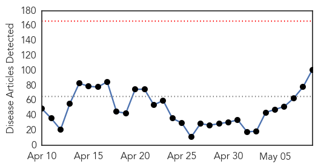
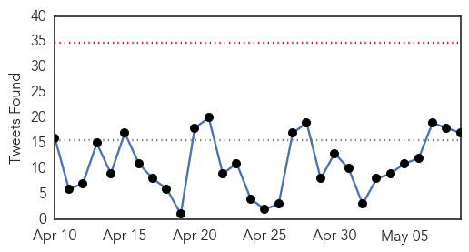
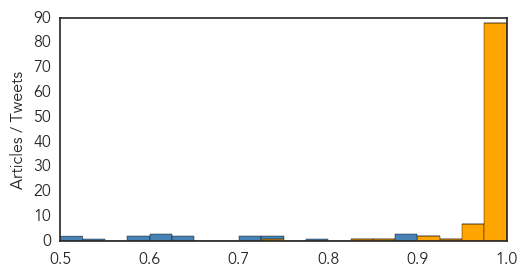
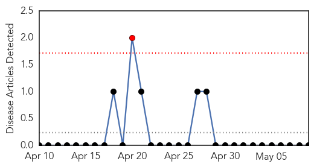

Ebola
30-Day Web Trend
0 alerts, 0 warnings

30-Day Twitter Trend
0 alerts, 0 warnings

Article Locations

Article Confidences
Top Articles:
- 1.000
- Liberia declared Ebola-free, but outbreak continues over border — Health — Bangor Daily News — BDN Maine
- 1.000
- In Liberia, Ebola outbreak is declared officially over
- 1.000
- Ebola Detected in Eye of Doctor Declared Free of Disease
- 1.000
- Liberia declared Ebola-free, but outbreak continues over border
- 1.000
- Liberia declared officially free from Ebola
- 1.000
- Liberia declared Ebola-free, but outbreak continues over border, Africa News & Top Stories
- 1.000
- WHO declares Liberia Ebola-free
- 1.000
- WHO declares Liberia free of Ebola
- 1.000
- Liberia Is Declared Free of Ebola, but Officials Sound Note of Caution
- 1.000
- Liberia deemed Ebola-free
- 1.000
- MSF welcomes news that Liberia is Ebola-free while urging continued vigilance
- 1.000
- Ebola: Liberia Ebola-free, MSF urges continued vigilance
- 1.000
- Liberia declared Ebola free, though risks remain, WHO warns
- 1.000
- Liberia declared Ebola-free as outbreak rages across border
- 1.000
- Liberia Declared Ebola-Free By World Health Organization, But Risk Remains High
- 1.000
- Liberia declared Ebola-free, but outbreak continues over border
- 1.000
- Liberia declared Ebola-free, but outbreak continues over bor..
- 1.000
- Liberia declared Ebola-free, but outbreak continues over border
- 1.000
- Liberia is free of Ebola, says World Health Organization
- 1.000
- Liberia is free of Ebola, says World Health Organization
- 1.000
- The Ebola outbreak in Liberia is over, WHO declares
- 1.000
- The Ebola outbreak in Liberia is over - Liberia
- 1.000
- Liberia's Ebola Nightmare Is Over
- 1.000
- WHO declares #Liberia Ebola-free
- 1.000
- Liberia declared Ebola-free, but outbreak continues over border
- 1.000
- Liberia declared Ebola-free, but outbreak continues over border
- 1.000
- UPDATE 3-Liberia declared Ebola-free, but outbreak continues over border
- 1.000
- Liberia’s Ebola Nightmare Is Over
- 1.000
- Liberia Wins in Battle against Ebola
- 1.000
- The Ebola outbreak in Liberia is over
- 1.000
- Liberia Is Declared Ebola-Free
- 0.999
- Liberia Declared Free Of Deadly Ebola Virus
- 0.999
- WHO declares Liberia free of Ebola transmission
- 0.999
- Liberia declared free of Ebola
- 0.999
- Ebola lives on in survivor's eye
- 0.999
- Liberia first country declared free of Ebola among hardest-hit, Africa News & Top Stories
- 0.999
- Dlamini-Zuma congratulates Liberia -
- 0.999
- W.H.O. Declares Liberia To Be Ebola Free
- 0.999
- Ebola lives on in eye of survivor
- 0.999
- Liberia declared Ebola-free, but outbreak continues in neighbouring Sierra Leone and Guinea
- 0.999
- Ebola declared dead in Liberia
- 0.999
- World Health Organization Declares Liberia Free Of Ebola
- 0.999
- Liberia is free of ebola: WHO
- 0.999
- Ebola 'Lives on in Eye of US Survivor'
- 0.999
- Liberia is Ebola Free: WHO
- 0.999
- How Liberia finally got rid of Ebola
- 0.999
- WHO declares Liberia free of Ebola virus transmission. - Xinhua
- 0.999
- World Health Organization declares Liberia free of Ebola - National
- 0.999
- Liberia declared Ebola-free after weeks of no cases
- 0.999
- WHO declares Liberia Ebola free
Showing top 50 articles...
Top Tweets:
- 0.971
- Liberia Is Free of Ebola, World Health Organization Declares - New York Times http://t.co/Fh9q4OaaiA ebola EVD
- 0.956
- 'Monumental achievement' for Liberia: Ebola epidemic over - SFGate http://t.co/h6DpSo3DvH ebola EVD
- 0.922
- WHO declares the end of the Ebola outbreak in Liberia Liberia StaysVigilant http://t.co/WHPr2dT3xJ
- 0.919
- THE END OF EBOLA? - Winnipeg Free Press http://t.co/fmAocQXoeM ebola EVD
- 0.900
- RT: WHO declares the end of the Ebola outbreak in Liberia Liberia StaysVigilant http://t.co/WHPr2dT3xJ
- 0.900
- RT: WHO declares the end of the Ebola outbreak in Liberia Liberia StaysVigilant http://t.co/WHPr2dT3xJ
- 0.898
- World Health Organization Declares Liberia Ebola-Free - Mediaite http://t.co/oROQrE6WaC
- 0.887
- Liberia Is Free of Ebola, World Health Organization Declares http://t.co/j4eayd4jDJ
- 0.885
- RT: Ebola still cripples West Africa. You can help EbolaResponse by spreading this msg faster than the disease! RT now! htt…
- 0.885
- RT: Ebola still cripples West Africa. You can help EbolaResponse by spreading this msg faster than the disease! RT now! htt…
- 0.874
- Liberia Is Officially Declared Free Of Ebola - NPR http://t.co/juoixYyjFn ebola EVD
- 0.856
- Ebola doctor Kent Brantly to IU Med grads: 'We stay to help' - Indianapolis Star http://t.co/OlxrDDo8eo ebola EVD
- 0.856
- AFD Blog `@WHO Declares Ebola Outbreak In Liberia Over' http://t.co/AZlMnvqSdW
- 0.840
- Liberia declared free of Ebola - Irish Independent http://t.co/FEd1t4zRNd ebola EVD
- 0.832
- WHO best practices for naming of new human infectious diseases http://t.co/HLICQzMR6s Nipah, Hendra, MERS, Lassa, Ebola, Legionnaires...
- 0.794
- Liberia Is Free of Ebola, World Health Organization Declares - New York Times http://t.co/K8HC1UQTMq
- 0.743
- WHO Warns that Ebola May be Transmitted Sexually | Urges Survivors & Their ... - Bella Naija http://t.co/jSQZJtH0lm ebola EVD
- 0.664
- Ebola survivor, Hoosier natvie speaks at IU School of Medicine commencement - WISH-TV http://t.co/JoDreU4ak8 ebola EVD
- 0.649
- Fantastic that no Ebola cases for 42 days, but it isn't over for Liberia until we are well past 42 days without cases in all 3 countries.
- 0.530
- Liberia Is Free of Ebola, World Health Organization Declares - http://t.co/degiEOTPPY. One down, 2 to go. Bravo. http://t.co/yOhCUlUW39
Yellow Fever
30-Day Web Trend
1 alerts, 0 warnings

30-Day Twitter Trend
0 alerts, 0 warnings

Article Locations

Article Confidences

Top Articles:
-
No articles found for May 09, 2015
Top Tweets:
-
No tweets found for May 09, 2015